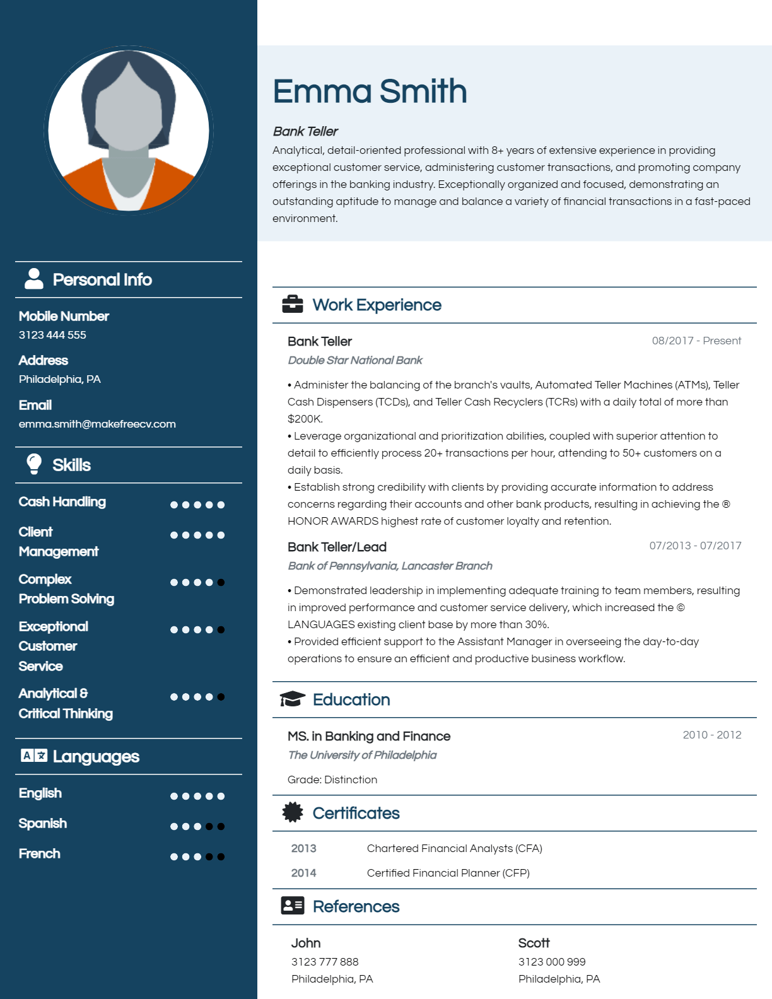

01
CV Builders
CV builders help students organise their qualifications, education, skills and work experience into a professional curriculum vitae. Templates can guide students who are creating their first CV or updating an existing one.
Examples: Canva and Zety.